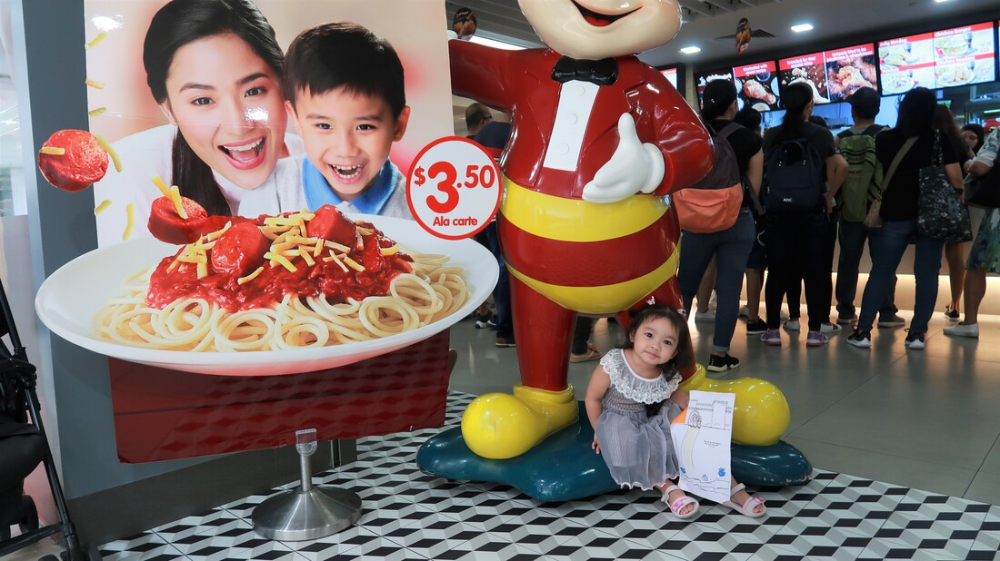

|
25 weeks ako ngayon, and nasa Singapore pa kami. Plan ko manganak sa Pilipinas. Ngayon pa lang, okay na din na simulan ko ang listahan ng mga dapat ko ding dalhin from Singapore to Philippines. I will try na ilista ano ba ang dapat laman ng aking hospital bag. Through this, machecheck ko kung alin ba ang dapat bilhin or dalhin ko from Singapore or sa Pinas na lang ako bibili. Isa sa iniiwasan ko ay "Overpacking" baka kasi sa kadamihan din ng dala dala ko sa hospital ay mahirapan lang ang magbibitbit or esle hindi din naman magamit. Sabi nila kapag mga 35 weeks na daw, kailangan daw handa ng lahat ang gamit. Which is tama naman, basta kapag nagkatime na, go pack na! A. LUGGAGE BAG - maximum of 2 siguro. Yung aking mga cabin size na luggage bag. Hopefully, lahat na ay nasa loob ng bag. Gamit ni Mommy, Daddy, Yanah. B. BABY BAG for BABY THINGS. So ito yung isang bag na ibibigay namin sa nurse para sa gamit ni Baby sa NICU. LUGGAGE FOR MOMMY1. Toiletries. * Shampoo and Soap (travel size). Sometimes provided to. Pero magdadala na din ako ng maliit lang para sa mga tagabantay na din. Malamang yung mga nasa Sachet eh oks na. (Head and shoulders and dove) * Lotion * Toothpaste and Toothbrush * Maternity pads * A box of tissue paper * Papaw * hairbrush and ties * moisturizers and UV creams ** magcheck ng mga travel size na bottles to bring or prefer sachet na lang** 2. Clothes
3. Electronics
4. Documents
LUGGAGE FOR BABY
OTHERS
LUGGAGE FOR DADDY* Chargers and phones
* Toiletries * Comfortable shoes and a few changes of comfortable clothes * Snacks and drinks * download app timing contractions * Money (or a credit card)
0 Comments
So, hayun na nga po, as of now, I am 25 weeks! Alam ko na po na buntis ako at itong mga details na 'to: EDD (Expected Delivery Date): Jan 1 or 2, 2020 *Your EDD is 40 weeks from the first day of your last menstrual period (LMP)* *Due date is only an estimate* (pero yung kay Yanah, sakto talaga!) *most babies are born between 38 and 42 weeks from the first day of their mom's LMP and only a small percentage of women actually deliver on their due date. Pero sabi ng una kong OB, pwede na akong manganak after Christmas. OUR PRAYER: Ang prayer namin sana "New year baby" si Baby namin.. hehe.. Pero syempre kung anong will ng Lord. Basta healthy si Baby and safe si mommy :). Regarding sa mga symptoms:
ANONG NARARAMDAMAN KO, physically Noong hindi ko pa alam na buntis ako.
At 4 weeks (CONFIRMED na through PT) - FIRST TRIMESTER *First Trimester: week 1-12 (3 months) Ngayong alam ko na at confirmed na may nasakit pa din. Nasakit pa din ang breast ko. At paminsan minsan ay nasakit ang balakang ko.
My first trimester: Sobrang mas feel na feel ko ang sakit ng ulo. Lalo pa at hindi ako nagwowork. Noong kay Yanah, kapag nasa office ako as in wala ako ng nararamdaman na sakit ng ulo. Pero ngayon, ramdam na ramdam ko. Things to watch out:
Things to watch out:
Heartburn. May mga nabasa ako na usually ang heartburn mga 3rd tri mararanasan. Pero nagigising ako na masakit ang dibdib ko. Kaya kailangan ko ng mataas na unan lagi. Tapos hindi pwede na agad akong babangon or kikilos, kasi sobrang as in masakit ang dibdib ko. Cravings! Pansin ko, ang hilig ko sa maasim. Palagi ako ngpapabili ng guava. Which is noong panahon ni Yanah hindi ata kami nagpanagpo ng Bayabas! Pero sobrang hilig ko sa watermelon naman noong kay Yanah. Constipation. Thank God! Hindi ko yan nararansan ngayon. Pero tanda ko sobrang isa yan sa problema ko noong panahon ni Yanah! Faintness and Dizziness. Unforgettable experience ko, June 12 and June 13. Dinala ako sa emergency room kasi natakot ang Dy. Nahimatay daw ako! Actually, dahil sa gutom, napakain ako ng tinapay na Gardenia na hindi ko naman usual kinakain. Around 12:30Am ko kinain. Mga pasadong 2am, iba na ang nararamdan ko. Gusto kong sumuka, tapos iba ang sakit ng dibdib. In short, ngvomit ako at naliyo. Nagtry pumoops. Then nahimatay ako! Buti na lang, nakaupo ako that time at kasama ko ang asawa ko sa banyo. Emotional at Senstitive. Napakasensitive ko. May time na inis na inis ako Kay Adrian. Missed Period. Ilang araw na akong delayed. Hindi ko masyadong binantayan. Pero isang gabi, parang sabi ko ay delayed na nga ata ako. Tapos un. nag-PT nga ako! Positive! "Feeling" mo buntis ka. Ramdam mo na iba! My first trimester: Sobrang mas feel na feel ko ang sakit ng ulo. Lalo pa at hindi ako nagwowork. Noong kay Yanah, kapag nasa office ako as in wala ako ng nararamdaman na sakit ng ulo. Pero ngayon, ramdam na ramdam ko. Things to watch out: Spotting. Early signs din pero thank God hindi ko naman sha naexperience. Normal yun kasi it is known as implantation bleeding, it happens when the fertilised egg attaches to the lining of the uterus - about 10 to 14 days after fertilisation.
Super natatawa ako sa reaction ni Yanah dito. Naghihintay kami ng train. Papunta kaming Church. After Church, pumunta kami sa SSS Office, sa Lucky Plaza. OUR AGENDA:
SSS Office. Ininform ako na ok na daw naman ang checke, meaning, nacancel na. So eto ang next ko na dapat gawin. Kaya bumalik ako sa PNB. Kasi need nila ng deposit slip na kita ang account number. PNB. Kapag pala nagdeposit ka, may fee na 5dollars. Anyways, no choice din naman. Photocopy. Mahal ang pa-photocopy sa Lucky plaza. Parang 1 dollar ata ang isang page. So mas maganda ready na pagpunta doon. Buti na lang may photocopy akong dala ng aking passport. Received Free Alkaline Water System by Eight Stars Alkaline System Kailan ko matatanggap ang BENEFIT? Sabi nila ay mga 2-3 months daw ang processing and darecho na sa account ko. Thank you, Lord! Ok na din, pandagdag sa gastos ko sa Pinas. NEW SSS CONTRIBUTIONStarting April 2019, nagpabago na ang contribution. So mas malaki na din ang benefit na matatanggap. KASO... nalate ako! kung manganganak ako ng December 2019, wala akong matatanggap na benefit. huhu.. Kasi dapat last month pa ako ngbayad ng contribution para macover ako. ANyways, hopefully January 2020 ako manganak! Magkano ang binayadan ko at mula saang bwan? Need kong magbayad ng mula Jan 2019 to Sept 2019 para covered ako. Sabi mga 40K din daw matatanggap. Ok na ok!!! Ininform din ako na mininum og 120 months contribution daw para makakuha din ako ng retirement benefit. So incase man na hindi ko magamit sa Maternity, okey lang din. Atleast. May risk pero oks lang. Wala din namang makakapagsabi kung kelan talaga ang due. But we are standing in prayer. Thank you, Lord kasi super productive ng araw namin na 'to. Ang daming natapos at nagawa.  Sobrang walang pila sa orderan sa Jollibee pero mejo matagal pa din ang serving ng food. Pero Thank you, Lord pa din!
|
AuthorWrite something about yourself. No need to be fancy, just an overview. Archives
September 2019
Categories |
 RSS Feed
RSS Feed